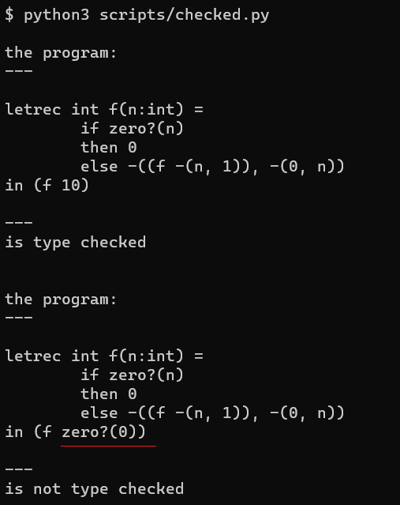

INFERRED: A Language with Type Inference¶
代码：checked.py
有类型检查的语言在一定程度上可以减少程序员犯错的几率，让一些简单的错误在编码早期被发现。
类型检查大体上说分为两个流派。
带类型注解
不带类型注解，也叫type inference
java c++ 之类的语言都是带类型注解的。
有 type inference 的语言有 haskell，高版本的c++的auto 语法一定程度上也可以算是type inference。
本篇文章主要讲如何给带类型注解的语言做type check。
首先看语法：proc 表达式的形参增加了类型签名，letrec表达式也是如此。
syntax:
Program ::= Expression
a-program(exp1)
Expression ::= Number
const-exp(num)
Expression ::= - (Expression, Expression)
diff-exp(exp1, exp2)
Expression ::= zero? (Expression)
zero?-exp(exp1)
Expression ::= if Expression then Expression else Expression
if-exp(exp1, exp2, exp3)
Expression ::= Identifier
var-exp(var)
Expression ::= let Identifier = Expression in Expression
let-exp (var, exp1, body)
Expression ::= proc (Identifier: Type) Expression
proc-exp (var, body)
Expression ::= (rator, rand)
call-exp(rator, rand)
Expression ::= letrec Type Identifier (Identifier: Type) = Expression in Expression
letrec-exp (p-name b-var p-body letrec-body)
运行示例程序看看：
针对这种带类型注解的语言，类型检查该怎么做呢，EOPL的办法很直接，直接写一个解释器； 不过这个解释器和我们常见的用来求值的解释器不一样，这个解释器是用来求type的，这其实是在做 抽象解释（abstract interpretation）。
具体实现思路 EOPL里面已经讲的很清楚了，这里只展示python的版本
def type_of(exp: Exp, tenv: TEnv):
if isinstance(exp, ConstExp):
return IntType()
if isinstance(exp, VarExp):
return tenv.apply(exp.name)
if isinstance(exp, DiffExp):
t1 = type_of(exp.exp1, tenv)
t2 = type_of(exp.exp2, tenv)
check_equal_type(t1, IntType(), exp.exp1)
check_equal_type(t2, IntType(), exp.exp2)
return IntType()
if isinstance(exp, IsZeroExp):
t1 = type_of(exp.exp, tenv)
check_equal_type(t1, IntType(), exp.exp)
return BoolType()
if isinstance(exp, IFExp):
t1 = type_of(exp.exp1, tenv)
t2 = type_of(exp.exp2, tenv)
t3 = type_of(exp.exp3, tenv)
check_equal_type(t1, BoolType(), exp.exp1)
check_equal_type(t2, t3, exp)
return t2
if isinstance(exp, LetExp):
t1 = type_of(exp.exp1, tenv)
return type_of(exp.body, TExtendEnv(exp.name, t1, tenv))
if isinstance(exp, ProcExp):
var_type = exp.var_type
result_type = type_of(exp.body, TExtendEnv(exp.var, var_type, tenv))
return ProcType(var_type, result_type)
if isinstance(exp, CallExp):
rator_type = type_of(exp.rator, tenv)
rand_type = type_of(exp.rand, tenv)
if not isinstance(rator_type, ProcType):
raise Exception("rator_type is not ProcType")
else:
check_equal_type(rator_type.arg_type, rand_type, exp.rand)
return rator_type.result_type
if isinstance(exp, LetRecExp):
tenv_for_letrec_body = TExtendEnv(exp.p_name, ProcType(exp.b_var_type, exp.p_result_type), tenv)
p_body_type = type_of(exp.p_body, TExtendEnv(exp.b_var, exp.b_var_type, tenv_for_letrec_body))
check_equal_type(p_body_type, exp.p_result_type, exp.p_body)
return type_of(exp.letrec_body, tenv_for_letrec_body)
其实就是在写解释器，在type_of求值的时候检查各种表达式提供的约束有没有满足要求，不满足就报类型错误。